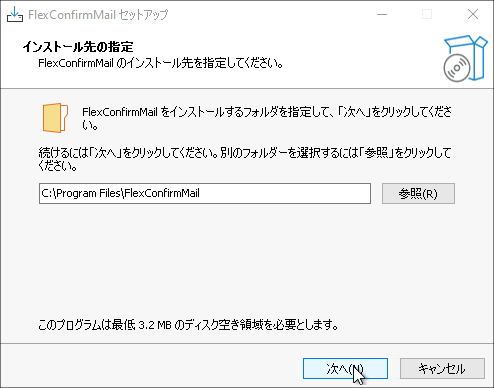
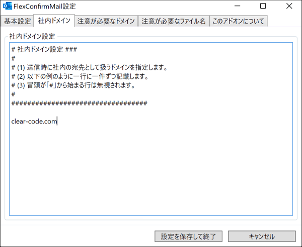
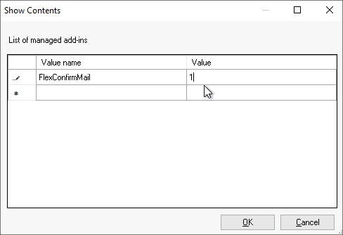

クイックスタート#
本記事では、FlexConfirmMailをOutlookに導入する方法について解説します。
目次
必須要件#
FlexConfirmMailはMicrosoft Office 2013以降をサポートしています。 また、Microsoft365をご利用の場合も、デスクトップクライアントに導入することが可能です。
詳しいシステム要件は ダウンロード を参照ください。
インストール#
FlexConfirmMailはEXE形式のインストーラを公開しています。 インストーラは こちらから 入手できます。
FlexConfirmMailSetup.exe を端末に配置します。
インストーラを実行し、ウィザードを完遂させます。
Outlookを起動します。
リボンの『ホーム』にFlexConfirmMailが追加されていれば成功です。
ヒント
FlexConfirmMailのアドオンが読み込まれなかった場合は、 Outlookの「ファイル > オプション」から、有効なアドオンの一覧に FlexConfirmMailが登録されていることを確認します。
設定とカスタマイズ#
FlexConfirmMailの設定はOutlookのリボンのアイコンから変更できます。
社内ドメインを設定する#
Outlookのホームタブから「FlexConfirmMail設定」をクリックします。
「社内ドメイン」タブをクリックし、ドメインを追記します。
「設定を保存して終了」を押下すれば完了です。
{kind=link}
注意が必要なドメインを設定する#
宛先に含まれる場合に、特に注意が必要なドメインの一覧を設定します。
{kind=link}
{kind=link}
注意が必要なファイル名を設定する#
注意が必要な添付ファイルのキーワードを設定します。
{kind=link}
{kind=link}
運用ヒント#
インストーラをサイレント実行する#
組織の端末に配布する時などに、FlexConfirmMailをサイレントインストールしたい場合は、 次のように/SILENTオプションを利用します:
% FlexConfirmMailSetup.exe /SILENT
アドオンが自動的に無効化されるのを防止する#
Office 2013以降にはパフォーマンスを自動的に最適化する機能が組み込まれており、 その一環としてアドオンを自動的に無効化することがあります。
FlexConfirmMailが自動的に無効化されるのを防止するには、 グループポリシーで下記の設定を追加ください。
グループポリシーエディタを開き、「ユーザーの構成」を開く。
「管理用テンプレート > Microsoft Outlook 2016 > その他」を順番に選択する。
「管理対象アドオンの一覧」の項目をダブルクリックする。
設定を「有効」にした上で、オプション欄の「表示」ボタンをクリックする。
値の名前に FlexConfirmMail と入力し、値を 1 に設定する。
「OK」ボタンを押下して確定する。
{kind=link}